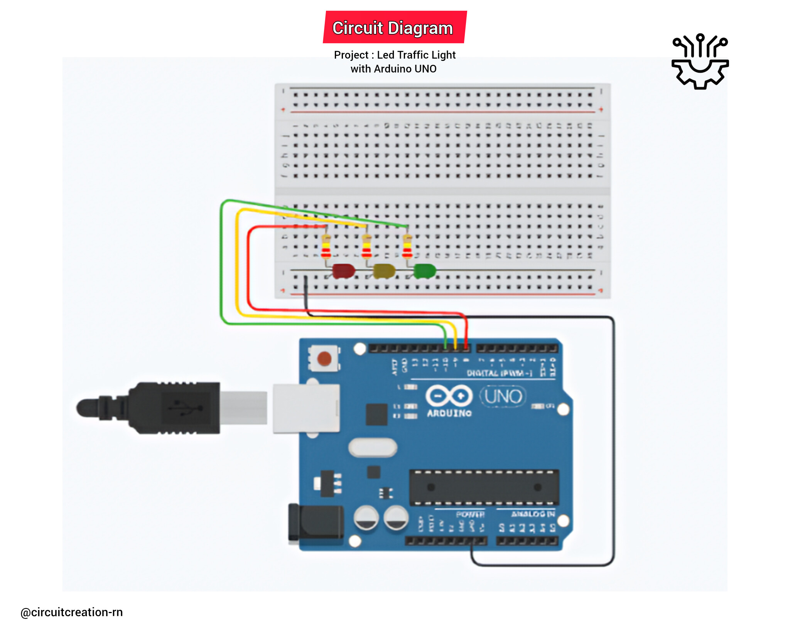

This beginner friendly Arduino UNO Traffic Light project uses red, yellow, and green LEDs to simulate a real traffic signal. The Arduino controls each LED in sequence using programmed timing, creating a simple and practical traffic light system.

Connect the long leg (anode) of the red LED to Arduino Digital Pin 8 through a 220Ω resistor. Connect the short leg (cathode) to GND.
Connect the long leg (anode) of the yellow LED to Arduino Digital Pin 9 through a 220Ω resistor. Connect the short leg (cathode) to GND.
Connect the long leg (anode) of the green LED to Arduino Digital Pin 10 through a 220Ω resistor. Connect the short leg (cathode) to GND.
Connect the Arduino UNO to your Android phone using the USB cable and OTG cable.
Open the Arduinodroid app, create a new sketch, and paste the Traffic Light code.
Compile and tap the Upload button. After uploading, the traffic light sequence will start automatically.
The three LEDs represent the main traffic signal lights. Each LED is connected to a separate Arduino digital pin through a 220Ω current-limiting resistor.
The Arduino turns the LEDs ON and OFF according to the programmed timing, producing the sequence red, yellow, and green.
/*
Arduino UNO Traffic Light
Components:
- Arduino UNO R3
- Red LED
- Yellow LED
- Green LED
- 3 × 220Ω Resistors
Author: Circuit Creation RN
*/
int redLED = 8;
int yellowLED = 9;
int greenLED = 10;
void setup() {
pinMode(redLED, OUTPUT);
pinMode(yellowLED, OUTPUT);
pinMode(greenLED, OUTPUT);
}
void loop() {
// RED
digitalWrite(redLED, HIGH);
digitalWrite(yellowLED, LOW);
digitalWrite(greenLED, LOW);
delay(5000);
// YELLOW
digitalWrite(redLED, LOW);
digitalWrite(yellowLED, HIGH);
digitalWrite(greenLED, LOW);
delay(2000);
// GREEN
digitalWrite(redLED, LOW);
digitalWrite(yellowLED, LOW);
digitalWrite(greenLED, HIGH);
delay(5000);
}
The setup() function configures Digital Pins 8, 9, and 10 as outputs for the red, yellow, and green LEDs.
Inside the loop() function, the Arduino turns the red LED ON for 5 seconds, the yellow LED ON for 2 seconds, and the green LED ON for 5 seconds. The sequence then repeats continuously.
You can write, compile, and upload Arduino sketches directly from your Android phone using the Arduinodroid app with an OTG cable no laptop or PC required.
Download from Google PlayAfter uploading the program, the Arduino UNO controls the three LEDs automatically. The red LED stays ON for 5 seconds, followed by the yellow LED for 2 seconds, and then the green LED for 5 seconds.
After the green light, the sequence starts again from the red light, creating a continuous traffic signal simulation.
The sequence is Red → Yellow → Green, and then it repeats.
The red LED stays ON for 5 seconds, yellow for 2 seconds, and green for 5 seconds.
Yes. You can change the values inside the delay() functions to make each light stay ON for a different amount of time.
Yes. You can use the Arduinodroid app with an Android phone and OTG cable to upload the program.
{kind=link}